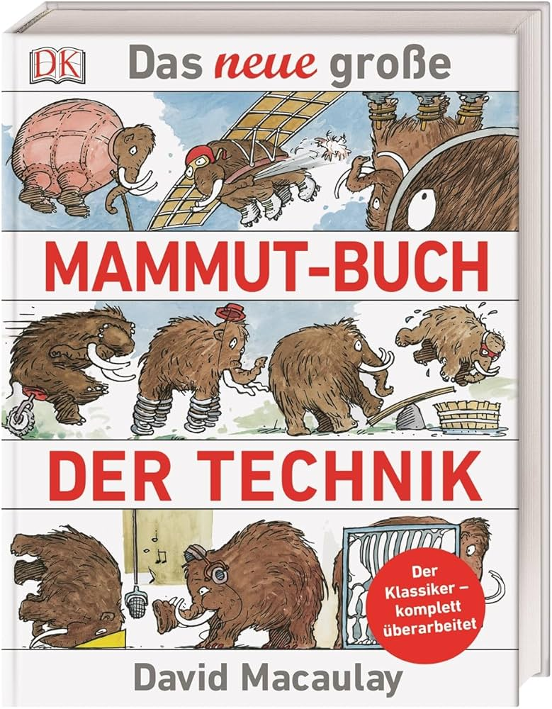

📖《技术大百科》是大卫·麦考利的经典科普作品，用可爱的猛犸象作为主角，生动讲解各种科学原理和技术装置。从杠杆原理到内燃机，从光学仪器到计算机，每一个技术概念都被转化为猛犸象的有趣故事。
这种独特的叙事方式让复杂的科学知识变得通俗易懂，适合各年龄段读者。
这本书相当有意思，用猛犸象来讲科学故事，很适合小朋友。
虽然说是适合小朋友，但作为一个成年人读起来也津津有味。作者用猛犸象这个古老而庞大的生物来解释现代技术，这种反差感非常有趣。比如用猛犸象洗澡来解释热力学，用猛犸象搬家来解释杠杆和滑轮，每一个场景都充满了想象力。
书中的插图是另一个亮点。细腻的钢笔画风格，细节丰富，既有工程图的精确，又有艺术画的温度。这种图文结合的方式，让读者能够直观地理解各种机械装置的工作原理。无论是给孩子做科普启蒙，还是成年人重温基础科学知识，这本书都是很好的选择。它证明了科普不一定要枯燥，有趣和严谨可以兼得。